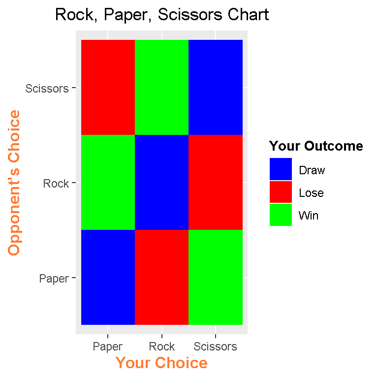

Making A Rock, Paper, Scissors Table In R
Hi there. I have recently played around with the geom_tile() function in the ggplot2 package in the statistical program R. With the geom_tile() function, you can create something as simple as a Rock, Paper, Scissors table.
Table Of Contents
- Rock, Paper Scissors Game
- Creating The Data Table
- Creating The Rock, Paper, Scissors Table Visual
- References
Rock, Paper Scissors Game
The well known game of Rock, Paper, Scissors is a (non-violent) one on one game using hands only. The winner of this game may or may not win a prize. The player chooses one of rock, paper, scissors and the second player does so also at the same time as the first player. An outcome is determined depending on the choices made. Here is a summary visual on which choices beats what. (If both players choose the same choice, it is a draw.)

Instead of the visual above, a visual table or a matrix plot will be made as an alternate visual.
Creating The Data Table
We start by making a data table in R.
As a player, you can choose one of Rock, Paper, Scissors. The opponent also has three choices. We would have nine possibilities from 3 x 3 = 9.
An empty matrix is created in R. This matrix would have 9 rows for the 9 possibilities and three columns. The first column would be the player’s choice, the second column would be the opponent’s choice and the third column would represent the outcomes as in either Win, Lose or Draw for the player.
Here is the code for setting up the data table in R.
# Rock Paper Scissors Matrix Table In R
# You Versus Opponent
# You can choose Rock, Paper or Scissors
# Rock Beats Scissors, Scissors Beats Paper and Paper Beats Rock
# Create empty table:
dataTable <- matrix(data = NA, nrow = 9, ncol = 3, byrow = TRUE)
dataTable <- as.data.frame(dataTable)
colnames(dataTable) <- c("You", "Opponent", "Outcome")
# Fill in columns
dataTable[, 1] <- c(rep("Rock", 3), rep("Paper", 3), rep("Scissors", 3))
dataTable[, 2] <- c(rep(c("Rock", "Paper", "Scissors"), 3))
dataTable[, 3] <- c(c("Draw", "Lose", "Win"), c("Win", "Draw", "Lose"), c("Lose", "Win", "Draw"))
# Check:
dataTable## You Opponent Outcome
## 1 Rock Rock Draw
## 2 Rock Paper Lose
## 3 Rock Scissors Win
## 4 Paper Rock Win
## 5 Paper Paper Draw
## 6 Paper Scissors Lose
## 7 Scissors Rock Lose
## 8 Scissors Paper Win
## 9 Scissors Scissors Draw
There is another way to create the table. This involves the use of Cartesian products from the mathematical field of Set Theory. This alternative is not shown here since there are 9 combinations and can be hard coded in. Cartesian products would be useful for larger tables.
#### Alternate Table Creation:
# can use expand.grid to make the Cartesian product table.
# Source: http://stackoverflow.com/questions/4309217/cartesian-product-data-frame-in-r
choices <- c("Rock", "Paper", "Scissors")
cartesianProd <- expand.grid(choices, choices)
cartesianProd <- as.data.frame(cartesianProd)
# Check:
cartesianProd ## Var1 Var2
## 1 Rock Rock
## 2 Paper Rock
## 3 Scissors Rock
## 4 Rock Paper
## 5 Paper Paper
## 6 Scissors Paper
## 7 Rock Scissors
## 8 Paper Scissors
## 9 Scissors Scissors
Creating The Rock, Paper, Scissors Table Visual
We can now start to make the matrix plot visual in R.
First, we convert the Outcome column into a column of factors. The resulting factors would be Win, Lose and Draw (for the player).
# Convert Outcome as Factors:
dataTable[, 3] <- as.factor(dataTable[, 3] )
str(dataTable)## 'data.frame': 9 obs. of 3 variables:
## $ You : chr "Rock" "Rock" "Rock" "Paper" ...
## $ Opponent: chr "Rock" "Paper" "Scissors" "Rock" ...
## $ Outcome : Factor w/ 3 levels "Draw","Lose",..: 1 2 3 3 1 2 2 3 1library(ggplot2)
The ggplot2 library in R is loaded too.
Here is the code and output for creating the rock, paper, scissors table in R.
# Creating the Rock, Paper, Scissors Matrix Plot:
ggplot(dataTable,aes(x = dataTable[, 1],y = dataTable[, 2],fill = dataTable[, 3])) +
geom_tile() +
scale_fill_manual(values = c('blue','red', "green")) +
labs(x = "Your Choice", y = "Opponent's Choice",
title = "Rock, Paper, Scissors Chart", fill = "Your Outcome") +
theme(plot.title = element_text(hjust = 0.5),
axis.title.x = element_text(face="bold", colour="#FF7A33", size = 12),
axis.title.y = element_text(face="bold", colour="#FF7A33", size = 12),
legend.title = element_text(face="bold", size = 10))
In the x-axis, I have the player’s choices and in the y-axis, I have the opponent’s choices. The third column in the table or the outcomes column is assigned to fill for the colours.
The choices are in ABC order. In scale_fill_manual(), I have values = c('blue','red', "green").
The labs() function allows for labels. These labels need to be specified in the labs() function.
I now know how to center titles in ggplot2. To center titles, use theme() with plot.title = element_text(hjust = 0.5) as an argument.
Inside theme(), I can adjust the fonts and sizes of the x-axis, y-axis and legend labels using elemen_text() with the arguments face = , colour = , and size = . Note that“#FF7A33” is the HTML colour code for the salmon-looking label colour.
References
Here are some useful websites which were useful to me.
- http://stackoverflow.com/questions/10232525/geom-tile-heatmap-with-different-high-fill-colours-based-on-factor
- http://stackoverflow.com/questions/16074440/r-ggplot2-center-align-a-multi-line-title
- http://docs.ggplot2.org/dev/vignettes/themes.html
- http://docs.ggplot2.org/current/theme.html
- Inspired By This Post (I like this person’s work too.):https://scriptsandstatistics.wordpress.com/2017/03/30/how-to-plot-a-companion-planting-guide-using-ggplot2/